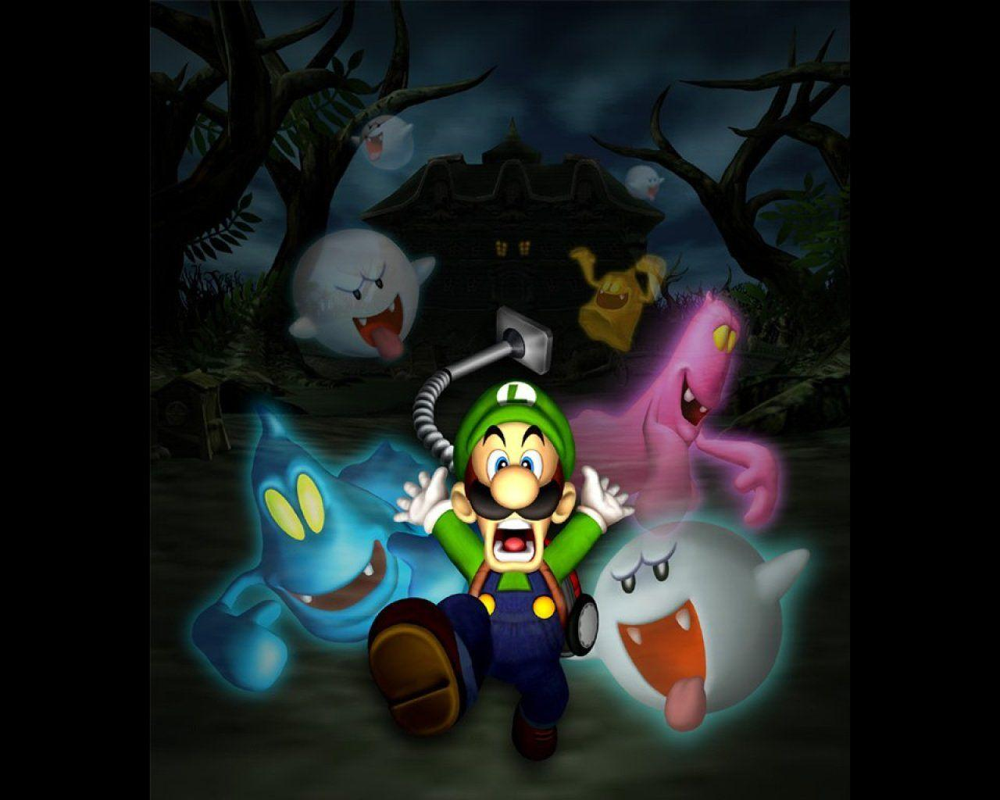
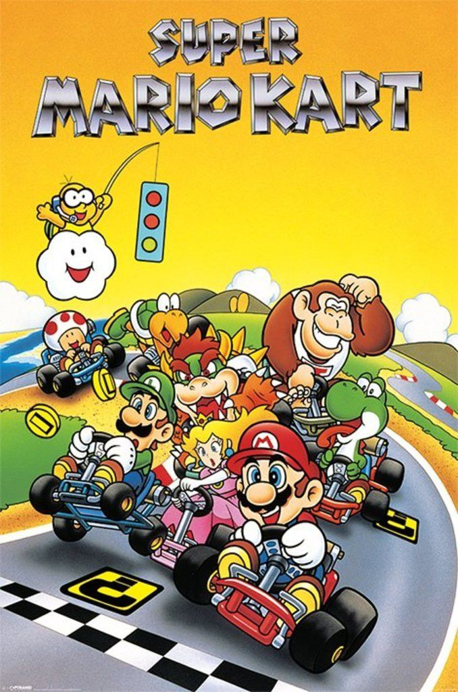
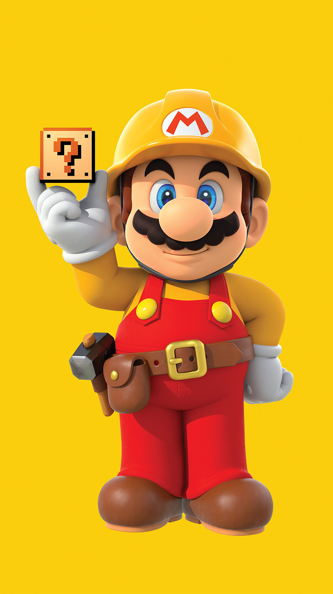
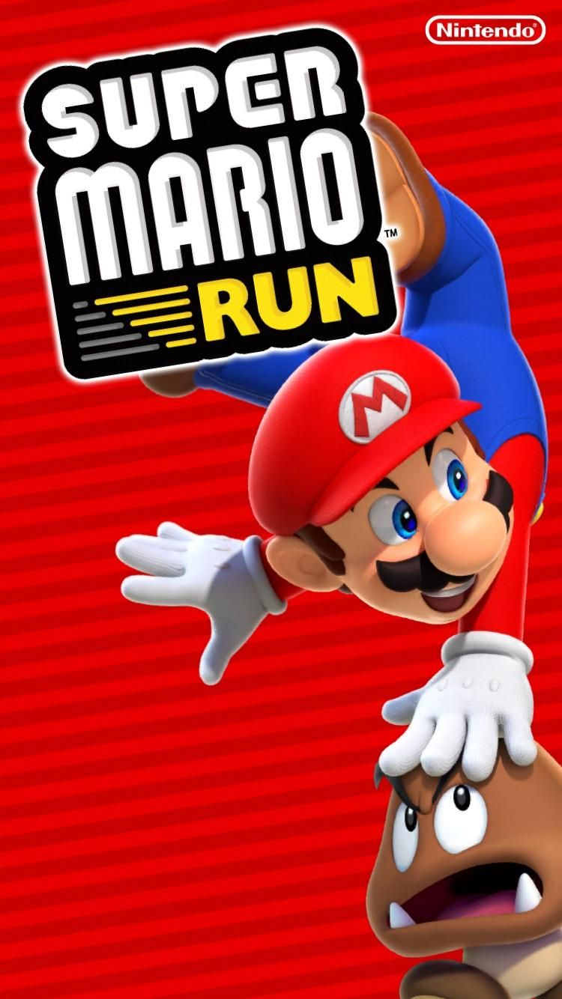
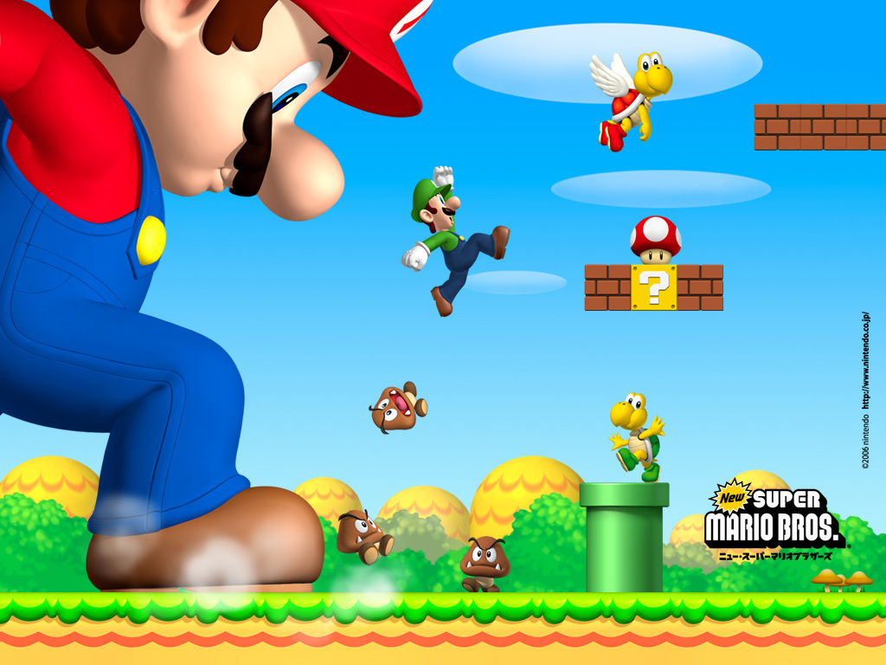
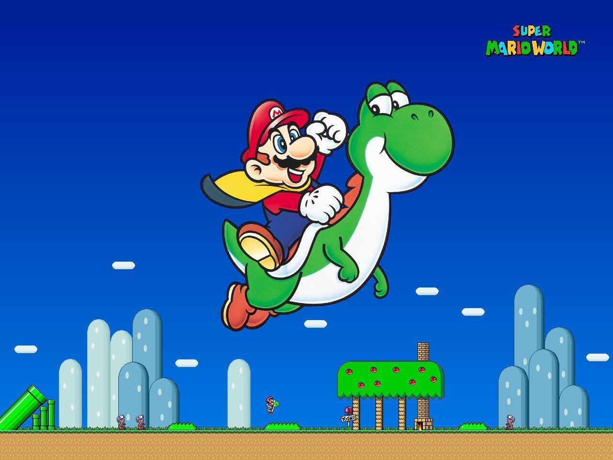
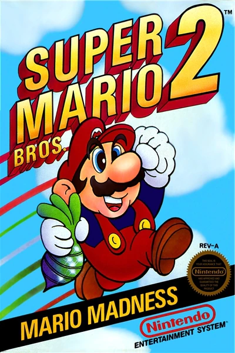
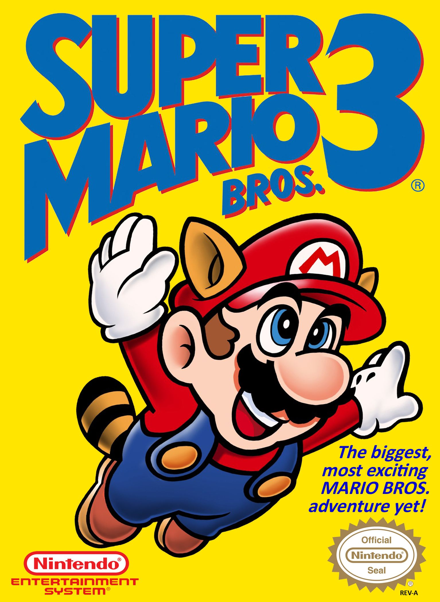
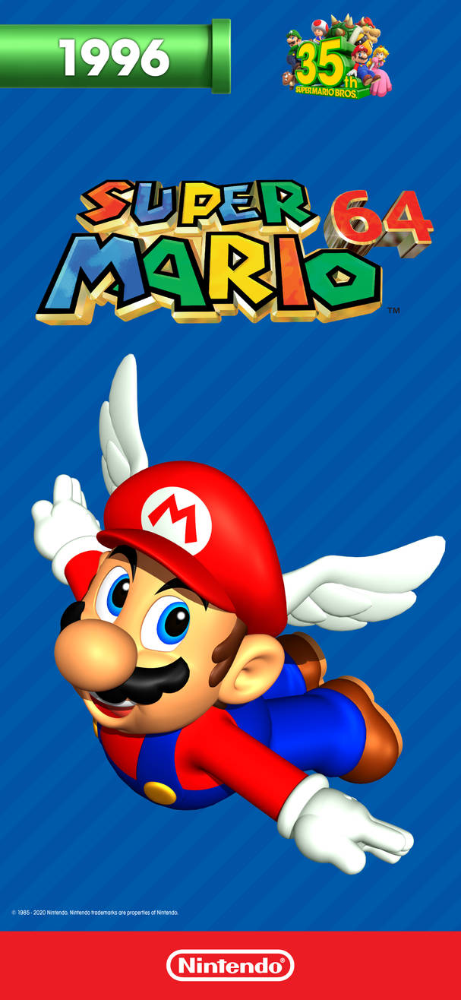
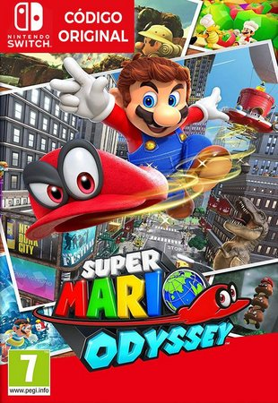

MARIOFLIX
Inicio
Animações
Jogos
O criador
HISTÓRIA QUE ENTROU EM VÁRIOS CONSOLES
Veja abaixo alguns dos lançamentos que mostram a expansão do ícone da Nintendo e suas histórias.
ANIVERSÁRIO DE 35 ANOS!
Um pouco da origem









